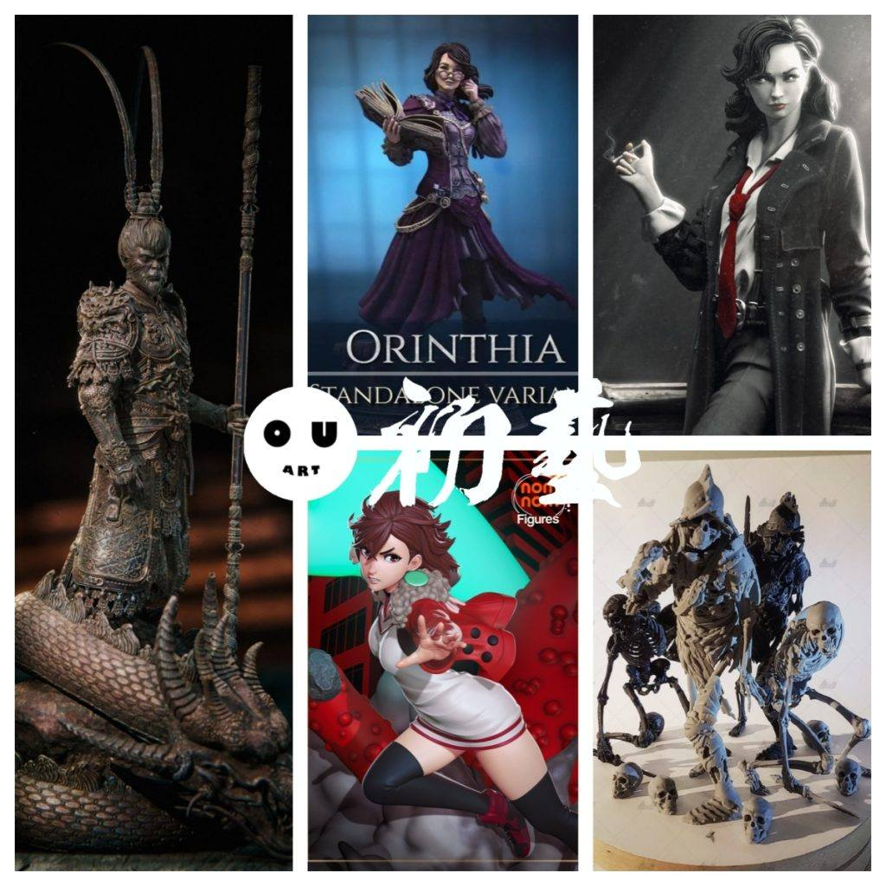
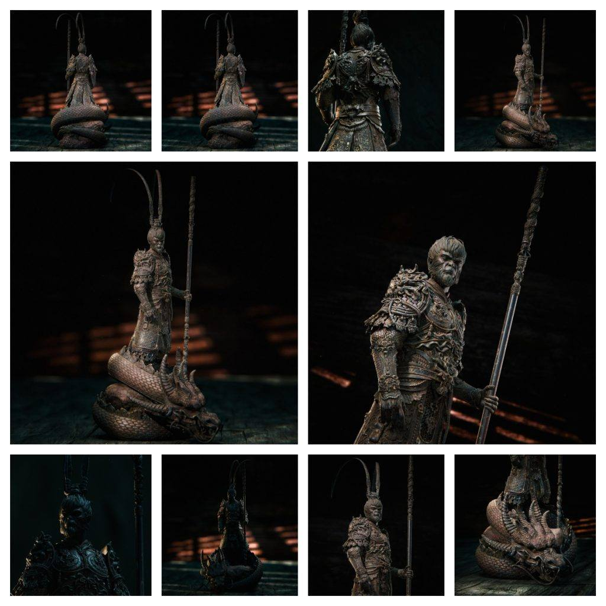
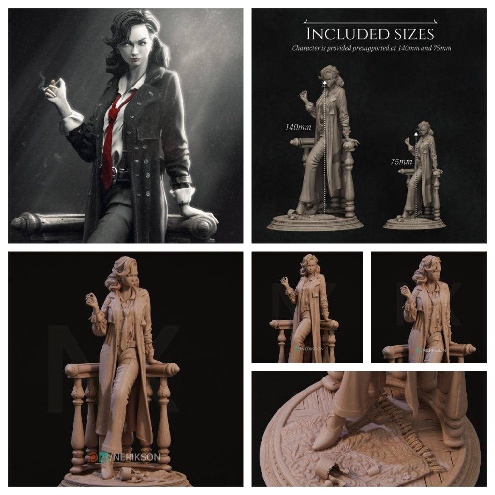
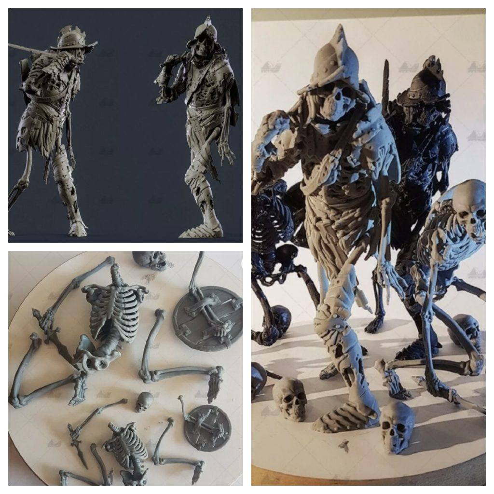
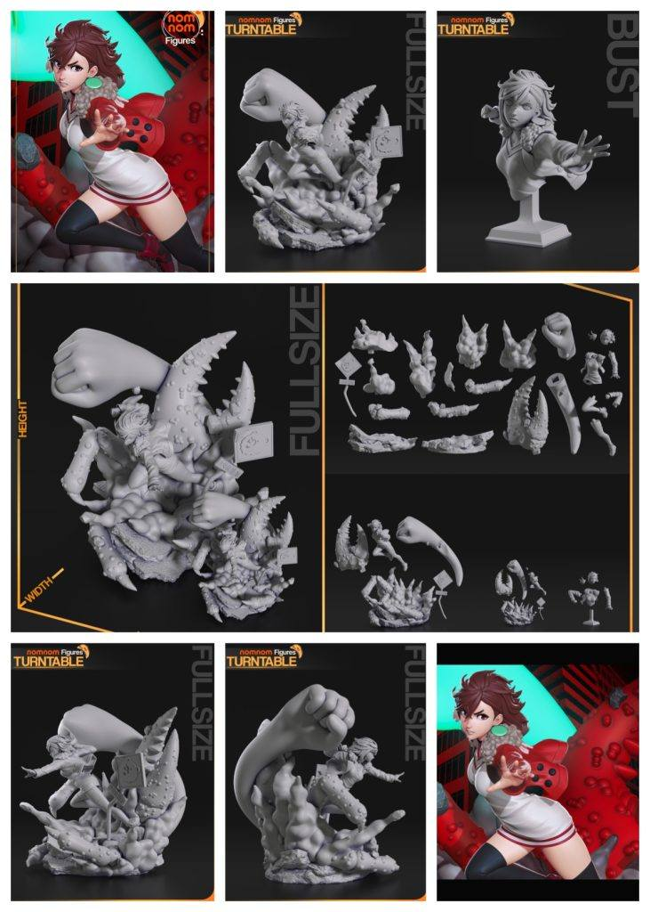
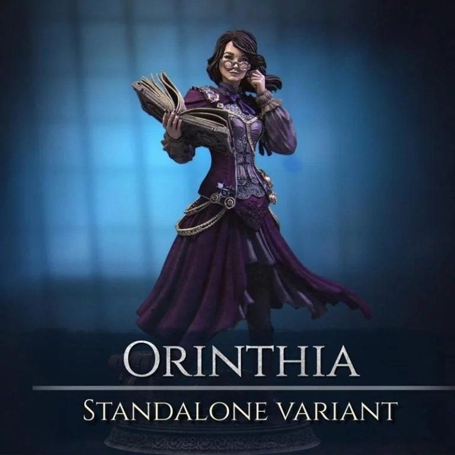

模型分享
12月31日STl图纸文件分享

今天分享大圣悟空的造型，之前没有分享过这个造型，补充一下。魔法图书馆管理员造型，书的细节很好，有分件。劳拉雕像，造型不错。胆大党，nomnom制作，做的不错还原度高。骷髅士兵一组，骨骼素材可用。





链接: https://pan.baidu.com/s/1ciPpVO7jiUzHn__W2WJq_A 提取码: kip6
以上内容仅供个人使用（非商用）
ONLY for PERSONAL (NON-COMMERCIAL) use.
加群获得更多免费模型！